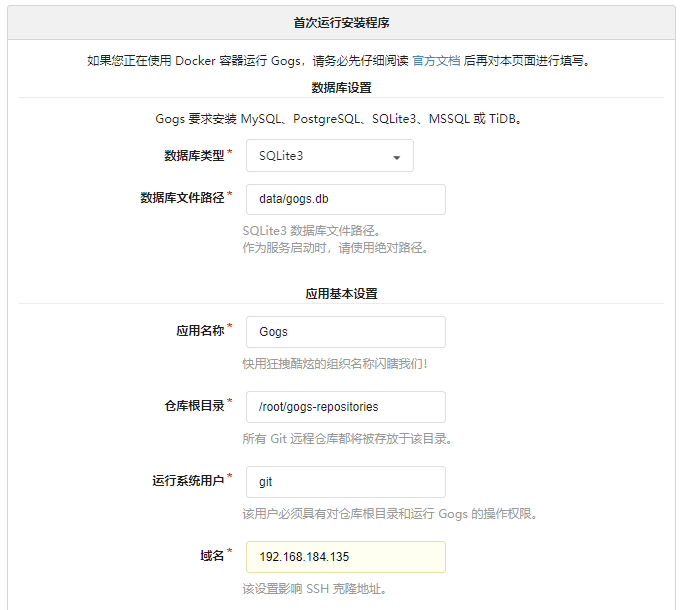

想要自己搭一个git的原因:
当我们进行实际开发的时候，我们不希望把自己的代码放到github上让别人托管，因为对于我们来说是非常不放心的，前一段时间，github上被盗窃了300+的代码，并且以此为威胁，让开发者们支付比特币进行恢复。虽然被盗的大部分代码都是因为密码过于简单而被人盗窃，但是这个也让我们警醒，只有在自己手里面才比较安全。
准备工作:docker+linux
(1) 下载gogs镜像:docker pull gogs/gogs
(2) 创建容器:docker run ‐d ‐‐name=gogs ‐p 10022:22 ‐p 3000:3000 ‐v /var/gogsdata:/data
gogs/gogs
在浏览器输入192.168.xx.xxx:3000进入gogs的主页面
因为我自己用，所以选择SQLlite。

注:只需要修改域名和应用URL就行了
这样，一个属于自己的git就已经搭建好了!